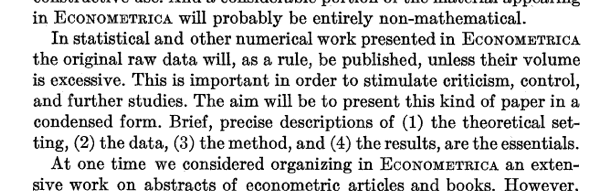
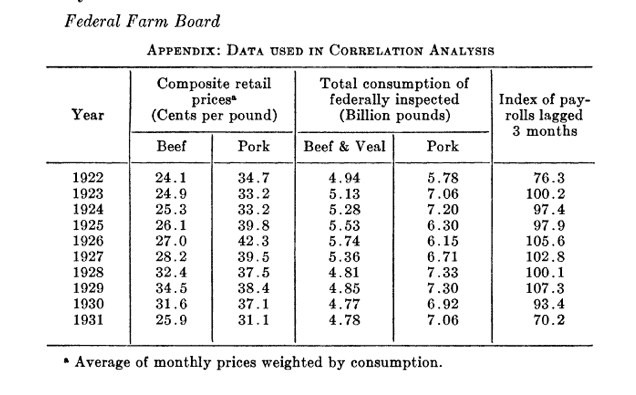
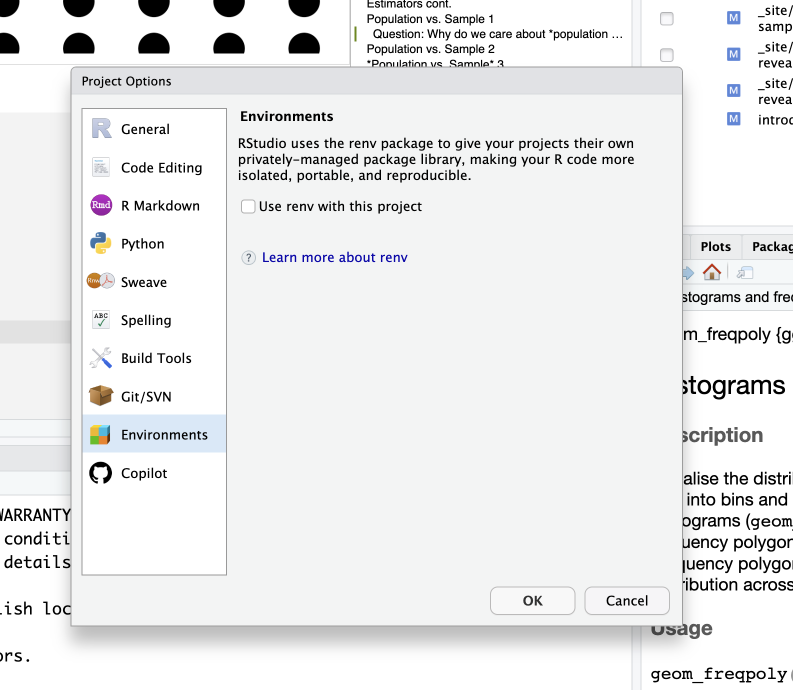

Robust and Reliable Science
Reproducibility
Start of the editorial in Science January 2014
- “Science advances on a foundation of trusted discoveries.
- Reproducing an experiment is one important approach that scientists use to gain confidence in their conclusions.
- Recently, the scientific community was shaken by reports that a troubling proportion of peer-reviewed preclinical studies are not reproducible”.(McNutt 2014)
- advances on a foundation of trusted discoveries
- scientists try to reproduce results to gain confidence in conclusions
- many peer-reviewed studies not reproducible
Replicability and Reproducibility
- “Replication—The confirmation of results and conclusions from one study obtained independently in another—is considered the scientific gold standard.”(Jasny et al. 2011)
- Reproducibility is a necessary, but not sufficient, condition for Replicability.
- Should Reproducibility be a minimal requirement for publication? (Peng (2011) discusses this with regard to Computational Science)
NSF: Robust and Reliable Science
There seems to have been some confusion regarding the terms.
At least the NSF1 felt a need to define the following (Bollen et al. 2015):
“robust and reliable” science refers to: research that is reproducible, replicable, and generalizable.
Reproducibility refers to: the ability of a researcher to duplicate the results of a prior study using the same materials and procedures used by the original investigator.
Replicability refers to: the ability of a researcher to duplicate the results of a prior study if the same procedures are followed but new data are collected.
Generalizability refers to: whether the results of a study apply in other contexts or populations that differ from the originals.
NSF: Robust and Reliable Science cont.
- See also “Dear Colleague Letter: Robust and Reliable Research in the Social, Behavioral, and Economic Sciences (Nsf16137) | NSF - National Science Foundation” (n.d.)
- Robust and reliable research is the foundation of all scientific development and progress, which depends critically on the ability of investigators to build on prior work.
What is research reproducibility?
- What does research reproducibility mean? (Goodman, Fanelli, and Ioannidis 2016)
- Methods reproducibility: “Methods reproducibility refers to the provision of enough detail about study procedures and data so the same procedures could, in theory or in actuality, be exactly repeated.”
- Results reproducibility: “Results reproducibility (previously described as replicability) refers to obtaining the same results from the conduct of an independent study whose procedures are as closely matched to the original experiment as possible.”
- Robustness and generalizability: “We briefly introduce these terms because they are sometimes used in lieu of the term reproducibility. Robustness refers to the stability of experimental conclusions to variations in either baseline assumptions or experimental procedures. It is somewhat related to the concept of generalizability (also known as transportability), which refers to the persistence of an effect in settings different from and outside of an experimental framework.”
Publication bias
- Publication bias refers to: the likelihood of a study being published based on the findings of the study.
- There are few published studies with a negative conclusion (can not reject H0),
- ex.: The treatment has no effect
- Worst case, Scientific journals are big collections of type 1 error
- There are few published studies with a negative conclusion (can not reject H0),
Problem: Type 1 error
- Type 1 error: reject H0 when H0 is true
- H0 is the conservative hypothesis, i.e. “no effect”
- with \(\alpha = 0,05\) we accept that in 1 of 20 cases we will reject H0 even if it`s true
- i.e. we conclude that there is an effect when in reality there is none (all because we were unlucky, or perhaps lucky if we want to be published, and got an unfortunate sample)
- So even if there are 100 similar studies that find no effect, there is a risk that the wrong one is what you will find in the literature
- This is often called the “File Drawer Problem” after Rosenthal (1979)
- studies where H0 can not be rejected go to the filing cabinet
- studies where H0 can be rejected will be sendt to the journals
Problem: Type 1 error
- Perhaps the most costly error is a false positive, the incorrect rejection of a null hypothesis.
- First, once they appear in the literature, false positives are particularly persistent.
- Because null results have many possible causes, failures to replicate previous findings are never conclusive.
- Furthermore, because it is uncommon for prestigious journals to publish null findings or exact replications, researchers have little incentive to even attempt them.
- Second, false positives waste resources: They inspire investment in fruitless research programs and can lead to ineffective policy changes.
- Finally, a field known for publishing false positives risks losing its credibility.(Simmons, Nelson, and Simonsohn 2011)
Publication bias and meta-analysis
- “More alarming is the general paucity in the literature of negative data. In some fields, almost all published studies show formally significant results so that statistical significance no longer appears discriminating” (Young, Ioannidis, and Al-Ubaydli 2008)
- Young, Ioannidis, and Al-Ubaydli (2008) analyses scientific information as an economic commodity
- A meta-analysis is a statistical analysis that combines the results of multiple scientific studies.(wikipedia 2020)
- If there is a publication bias this will also influence meta-analysis’
- Iyengar and Greenhouse (1988) discusses techniques to deal with this problem
The Replication Crisis
- The last Replication Crisis seems to have started in Psychology, but spread fast to other branches of science
- Simmons, Nelson, and Simonsohn (2011) “proves” that you will get, or at least feel, younger by listening to “When I’m Sixty-Four” by The Beatles.
- Simmons, Nelson, and Simonsohn (2011) suggest a solution to the problem
- list of requirements for authers (6) and guidelines for editors (4)
- Simmons, Nelson, and Simonsohn (2011) suggest a solution to the problem
The Replication Crisis
- Why Most Published Research Findings Are False Ioannidis (2005)
- “There is increasing concern that in modern research, false findings may be the majority or even the vast majority of published research claims [6–8]. However, this should not be surprising. It can be proven that most claimed research findings are false.”
- Again, and again, and again Jasny et al. (2011)
- How do we promote the publication of replicable data?
- Introduction to Science special section on Data Replication & Reproducibility
- Promoting an open research culture B. A. Nosek et al. (2015)
- Author guidelines for journals could help to promote transparency, openness, and reproducibility
Big replication studies in psychology
- Estimating the reproducibility of psychological science Brian A. Nosek and et al (2015)
- totalt 270 forskere involvert
- Tried to replicate 100 studies from the last 3 years taken from 3 of the most respected journals in the field
- Results: Replication effects were half the magnitude of original effects
- Results: Ninetyseven percent of original studies had significant results (p< .05). Thirtysix percent of replications had significant results
- Results: In sum, a large portion of replications did not reproduce evidence supporting the original results despite using highpowered designs and original materials when available.
Big replication studies in psychology cont.
- Many labs 2: Investigating variation in replicability across samples and settings Klein et al. (2018). See Collaboration (2015) for abstract.
- “We conducted preregistered replications of 28 classic and contemporary published findings, with protocols that were peer reviewed in advance, to examine variation in effect magnitudes across samples and settings.”
- “Using the conventional criterion of statistical significance (p < .05), we found that 15 (54%) of the replications provided evidence of a statistically significant effect in the same direction as the original finding.”
The JMCB project (1982)
- 1982 The Journal of Money, Credit and Banking Project (NSF sponsored)
- Replication (with submitted data sets) so in a modern sense more of an attempt at testing reproducibility
- Results: Managed full replication for 2 out of more than 70
- Results: Some more with nearly the original results
- Results: Many was impossible to replicate because of missing data, faulty computer programs, no documentation e.t.c.
- Many authers just ingored request for data and code
- “It would be embarrassing to reveal the findings of the Project save for our belief that the findings would be little different from any other major economics journal”
What about economics?
- Good intentions!

What about economics?
- Example of such a dataset (Ezekiel 1933)

What about economics?
- 1960, big economic models
- difficult to move from one mainframe to another, see
- only results published, replication/reproduction nearly impossible
- difficult to move from one mainframe to another, see
“The Solution”
- Code and data archives at the journals
- American Economic Association data archive, (“American Economic Association,” n.d.)
- Did the solution work?
- Do economics journal archives promote replicable research? (McCullough, McGeary, and Harrison 2008)
- Abstract. All the long-standing archives at economics journals do not facilitate the re-production of published results. The data-only archives at Journal of Business and Economic Statistics and Economic Journal fail in part because most authors do not contribute data. Results published in the FRB St. Louis Review can rarely be reproduced using the data+code in the journal archive.
- The solution does not seem to work very well
“Extension of the solution”
- Research Objects, (Bechhofer et al. 2013)
- “Research Objects, semantically rich aggregations of resources that provide the “units of knowledge” which supply structure for delivery of information as Linked Data.”
- DataCite - A global registration agency for research data, Brase (2009)
- International co-operations to register data sets and give them a unique DOI (Document Object Indentifier)
- EU initiative Access to and Preservation of Scientific Information in Europe: Report on the Implementation of Commission Recommendation C(2012) 4890 Final. (2015)
- “This report provides an overview on access to and preservation of scientific information in the EU Member States as well as Norway and Turkey.”
Another solution, “computable documents” I
- What if the code is an integral part of the article?
- What is to be sent to the Journal is:
- one document containing the text and
- the code to read in the data and
- the code to calculate the different models and
- the code to test them and
- the code to report the results.
- What would be submitted would be, together with the data, a fully reproducible document
Another solution, “computable documents” II
- The main idea is often attributed to Donald E. Knuth (1992), although Knuth explicitly points out that it was not his idea (D. E. Knuth 1984)
- Knuths main goal seems to be to improve the quality of the program documentation (and indirectly the quality of the code) with WEB.
- Noweb, Ramsey (n.d.)
- “noweb is designed to meet the needs of literate programmers while remaining as simple as possible. Its primary advantages are simplicity, extensibility, and language-independence—especially noticeable when compared with other literate-programming tools. noweb uses 5 control sequences to WEB’s 27.”
Another solution, “computable documents” III
- “In the mid 1980’s, researchers at our laboratory noticed that a few months after completing a project, the researchers were usually unable to reproduce their own computational work without considerable agony. In 1991, the concept of electronic documents solved this problem by making scientific computations reproducible.”(Schwab, Karrenbach, and Claerbout 1995)
- unix
makefiles
- unix
- Connection between code and reproducibility. All code necessary to generate figures freely avaiable (WaveLab a Matlab (Matlab is proprietary software) library).(Buckheit and Donoho 1995)
- “solutions for practical reproducible research systems”, (Fomel and Claerbout 2009)
- Introduction to special issue of Computing in Science & Engineering ( Volume: 11 , Issue: 1 , Jan.-Feb. 2009 )
Another solution, “computable documents” IV
- “It is important, if not essential, to integrate the computations and code used in data analyses, methodological descriptions, simulations, and so on with the documents that describe and rely on them.” (Gentleman and Lang 2007)[^2]
- “We introduce the concept of a compendium as both a container for the different elements that make up the document and its computations (i.e. text, code, data, …), and as a means for distributing, managing and updating the collection.”
- “The step from disseminating analyses via a compendium to reproducible research is a small one. By reproducible research, we mean research papers with accom- panying software tools that allow the reader to directly reproduce the results and employ the methods that are presented in the research paper.”
Another solution, “computable documents” V
- “a compendium has one, or more, self-contained live documents that can be regenerated in absolute detail by others, and that can often be used in contexts other than the author’s original work.”
- “We define a dynamic document as an ordered composition of code chunks and text chunks that describe and discuss a problem and its solution. The ordering of the chunks need not be simply sequential but can support rich and complex document structures.”
- “The mechanism or system used to transform a dynamic document into some desired output or view will be called a transformer.”
- In Gentleman (2005) parts of Golub et al. (1999) is reproduced as a computable compendium.
Implementations I
- Sweave, executable code (R or Splus) in LaTex documents, (Leisch 2002)
- Knitr, (Xie 2014), (Xie 2015) and (Xie 2020)
- R code in LaTex documents (like Sweave), but also support for R Markdown (Allaire et al. 2020), (Tierney, n.d.), (Xie, Allaire, and Grolemund 2018) and (Riederer, n.d.)
- Markdown Gruber and Swartz (n.d.), plain text with simple markup. Intended for Grubers web site.
- R Markdown, markdown with R code-chuncks
- RStudio (RStudio Team 2020), IDE for R supporting R Markdown and knitr
Implementations II
- R Notebook, document type supported by RStudio that implements a notebook interface, i.e. output is returned to the notebook when it is run
- Code should be run sequentially, but each code-chunck can be run individually
- Support LaTex code for mathematical typesetting
- pandoc, (“Pandoc - Pandoc User’s Guide,” n.d.), functions as the transformer (from
- and can transform a R Markdown document into many different formats.
- including MS Word, html and pdf (via LaTex)
- Introductory books on R, (Lander 2017) and Data Science, (Grolemund and Wickham, n.d.) often includes chapters on how to write dynamic computable documents in R Studio
Implementations III
- Quarto documents
- The updated and more robust version of R Notebook/.Rmd documents
- Still uses pandoc, output to html, pdf, docx and other formats
- Supports LaTeX for mathematics
- Support Zotero/BiBTeX for citations and references
- R-code in code-chuncks
Reproducible. To what degree?
- Reproducible with
- same hardware,
- same system,
- same version of system libraries,
- same R-version,
- same package versions
Is this really reproducibility?
How serious?
- Hardware, system, system libraries, R-version
- Cause for less concern, but good practice to include output of
sessionInfo().
- Cause for less concern, but good practice to include output of
- Package versions
- Probably what we should be most concerned about
- Rapid development
- Use of packages under development
- Possible solution: use
renvfor project
Enable renv
Select Project Options … and enable renv.

Project Options …Keeps local versions of packages used in project.
Still concerned about Hardware, system, system libraries, R-version?
- Check out Docker
- Learn to use Docker
- Docker Desktop
References
Footnotes
Subcommittee on Replicability in Science Advisory Committee to the National Science Foundation Directorate for Social, Behavioural, and Economic Sciences↩︎